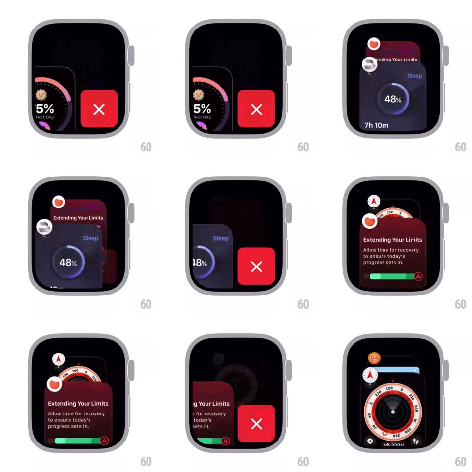

Media
Frame-by-frame

Rebuild this interaction 1:1: closing an app in the watchOS switcher - the front card is swiped/peeked aside to reveal a red delete button, tapping it shrinks the card away while the card behind slides up and grows into the front slot.

Rebuild this interaction 1:1: closing an app in the watchOS switcher - the front card is swiped/peeked aside to reveal a red delete button, tapping it shrinks the card away while the card behind slides up and grows into the front slot. ## Integration Integration: stack-agnostic spec - springs given as stiffness/damping, timed motions as duration + curve; map every value to your framework and animation library of choice. ## Scene Watch switcher stack: front app card (75% Perfect Day ring, Sleep 48%, Extending Your Limits) shifted left to expose a round red button with a white X on the right. ## Motion spec Pattern: reveal-and-dismiss with stack promotion. - Swipe the front card left: it tracks the finger 1:1 up to ~55% width, revealing the red X button which fades + scales in from the right edge (200ms); release either snaps the card back (spring ~350/24) or holds it docked showing the button. - Tap the X: the button pulses (scale 0.9 -> 1, 120ms), the doomed card shrinks toward its center (scale 1 -> 0.2) while fading out (280ms ease-in), sliding slightly right as it dies. - Simultaneously the card behind animates into the front position: translateY up + scale 0.85 -> 1 + opacity 0.6 -> 1 (spring ~300/22, ~380ms) - promotion overlaps the dismissal by ~60%. - The icon rail re-links: the promoted card's icon floats to the front slot with a small overshoot bounce. - The X button fades out as the new front card settles. ## Calibration - Only the front card is closable; the X exists only in the peeked state. - Dismissal and promotion are one continuous motion, not sequential steps. ## Reduced motion Card crossfades out; next card fades into place without translation. ## Don't miss - The deleted card shrinks toward its own center, not the screen center. - After closing, the stack's perspective depth resets - no gap frame.